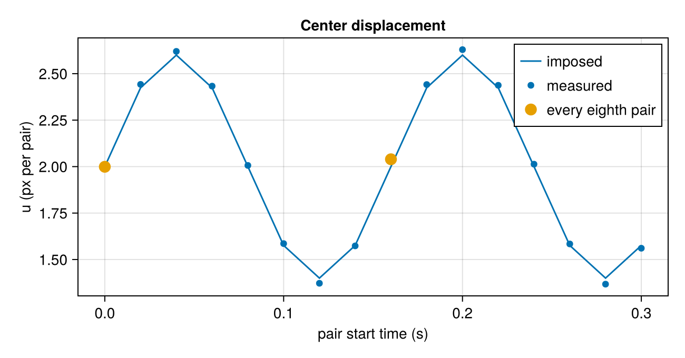
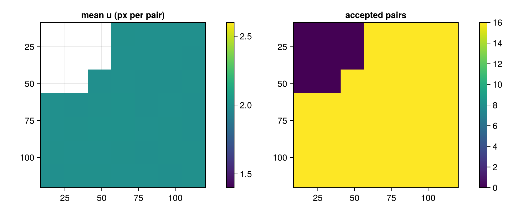
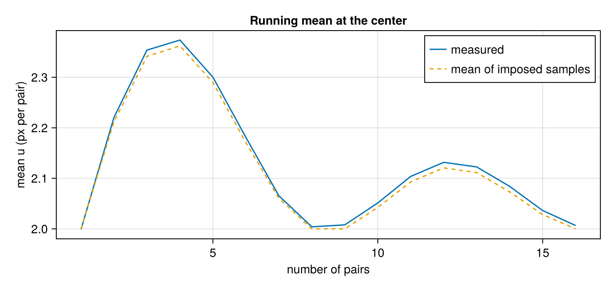

From image pairs to flow statistics
Measure a series of particle-image pairs, then calculate a mean field and the variation between pairs. This example generates a short sequence so the sampling times and imposed motion are known. The same analysis works on image paths; see Batch processing.
Make a sampled recording
Each pair has two exposures separated by 0.01 s. New pairs start every 0.02 s. The exposure separation converts displacement to velocity; the interval between pairs tells us how often the velocity field was sampled. They need not be equal. The imposed horizontal velocity varies periodically from pair to pair, while the vertical velocity stays fixed.
using Hammerhead
using Hammerhead.SyntheticData
using Random
using Statistics: median
using CairoMakie
exposure_dt = 0.01 # seconds between images A and B
sample_dt = 0.02 # seconds between successive image pairs
sample_times = (0:15) .* sample_dt
flow(x, y, z, t) = (200 + 60sin(2π * t / 0.16), 50.0, 0.0) # px/s
rng = MersenneTwister(2026)
pairs = [begin
a, b, _, _ = generate_synthetic_piv_pair(flow, (128, 128), exposure_dt;
t0 = t, particle_density = 0.05, background_noise = 0.03,
z_range = (-1.0, 1.0), rng)
(a, b)
end for t in sample_times]16-element Vector{Tuple{Matrix{Float64}, Matrix{Float64}}}:
([0.025970459586312236 0.01285194740376154 … 0.007927397076191757 0.040004671667225836; 0.4613492149799483 0.4225614722125597 … 0.0 0.0; … ; 0.0 0.0 … 0.0 0.015708715800485346; 0.0 0.0 … 0.03501392392626642 0.0012273853703008088], [0.019335499231098913 0.019128234857539596 … 0.034271670457348226 0.0; 0.021303944686882684 0.03698670216455259 … 0.0 0.0; … ; 0.05637713880221812 0.028430714655796052 … 0.022981313346388 0.018033852020469615; 0.03174886082024783 0.0 … 0.009875296565420117 0.0])
([0.0 0.028130737462560777 … 0.0 0.05481313390545634; 0.24815088417451403 0.2765256566029152 … 0.012993788564027295 0.021707273195746418; … ; 0.0 0.0 … 0.25297160886319137 0.05048319666472661; 0.0 0.0 … 0.24343429791033636 0.0], [0.05598292760803491 0.00525091191945282 … 0.0 0.004952201245699068; 0.027592741417212727 0.0 … 0.3260914672260578 0.0686165196766408; … ; 0.011632183423164176 0.0 … 0.21353855877313488 0.35890427262892444; 0.012860910994251915 0.006074680514923089 … 0.31039576030349214 0.5699178956072701])
([0.039988883588052596 0.05929668785218552 … 0.24770617134493067 0.45767599022082084; 0.0511606109692045 0.17900274997283971 … 0.6200012491495058 1.0553192688584616; … ; 0.0 0.0 … 0.5315776646299226 0.008843119283597704; 0.0 0.0 … 0.1968880213675699 0.004980033223755238], [0.0 0.005863189259490637 … 0.014418502690877324 0.03440819397013471; 0.0 0.0 … 0.0 0.007893851971375144; … ; 0.0 0.0 … 0.2890049097433174 0.8462897476702755; 0.0 0.05297543736879858 … 0.024371550191213162 0.33539726678582493])
([0.047920301144201684 0.0 … 0.22025736296419163 0.2547445574685729; 0.5976079355493682 0.044343844984908974 … 0.07861617443230189 0.055795467922242784; … ; 0.5382361046502826 1.0663548258718354 … 0.0 0.0; 0.36241308489680873 0.6105177787710009 … 0.0038169585825178444 0.0], [0.02734251104013244 0.0 … 0.0 0.04576460813278272; 0.029245608818281987 0.30336015304212055 … 0.0 0.0; … ; 0.046003099281755395 0.042199192837089075 … 0.0 0.0; 0.0012832865107220426 0.026950046368284495 … 0.06682130120857682 0.0])
([0.025143475693524445 0.18251283379735636 … 0.02316150107754935 0.0; 0.0010186257178774446 0.07396506468327221 … 0.007029112208499136 0.0; … ; 0.023661424835517007 0.0 … 0.2538416183121501 0.008024592105930033; 0.034897672647044846 0.0 … 0.1987675811325025 0.014447449039846648], [0.003837259371840334 0.0 … 0.0 0.0; 0.006521868289922716 0.0024886692424514376 … 0.0 0.0; … ; 0.0023441151175504194 0.021373271561307035 … 0.17220533459885404 0.29063097574917707; 0.0 0.013348498354004328 … 0.3082069694631674 0.5043593663768646])
([0.0 0.0 … 0.1161615481542485 0.1618456748281293; 0.0 0.006161486855530815 … 0.3463915212648765 0.6161117338308157; … ; 0.02622036618900546 0.17560631567397855 … 0.801423336665736 0.46047802755481154; 0.01248475413591571 0.0124543437136938 … 0.22054274399447338 0.11995578553801478], [0.00023377934517349372 0.0 … 0.11785275797025958 0.08489208355577035; 0.0 0.0 … 0.15038852337034359 0.07771282981701216; … ; 0.018553130745886125 0.006124426909425466 … 0.06778893761825594 0.5091079614412375; 0.0 0.018831384673655825 … 0.01421074962958038 0.3052281678271265])
([0.0 0.035345515511175984 … 0.6456961752888185 0.9926129787231353; 0.0 0.029502774033489054 … 0.34815260044772817 0.4506530388467071; … ; 0.025549005270985102 0.03885722248456935 … 0.02043133039858837 0.05265762368200608; 0.002066528822590118 0.0 … 0.0 0.0], [0.0 0.006006690928020957 … 0.07132399229412704 0.3257482199130997; 0.036598263889617934 0.06448276568744797 … 0.001943361808774531 0.2857661506075563; … ; 0.0 0.0 … 0.025086226530075362 0.11150261408647014; 0.0 0.008437313059457678 … 0.0 0.0])
([0.0 0.0 … 0.0 0.0; 0.0 0.0 … 0.05270569005085304 0.014615803706718755; … ; 0.03928127895870862 0.0 … 0.003769830563718899 0.02837211155775144; 0.0 0.021971938818045374 … 0.024063549086849798 0.008936254594580613], [0.007543006015769604 0.04542071369178356 … 0.0 0.02538528572891929; 0.0 0.03782454752083314 … 0.0 0.0; … ; 0.0 0.0 … 0.0 0.029359594120393174; 0.0070057656726712865 0.0 … 0.0 0.0])
([0.10441660375121067 0.5025246212273999 … 0.3146578690807673 0.44656760655791067; 0.11546324983681493 0.3075014745717704 … 0.07171790603015922 0.09849832262825517; … ; 0.0 0.04941125200564153 … 0.011391018649200037 0.0; 0.06960355184177483 0.176098989332222 … 0.0 0.0], [0.014176312871482983 0.0 … 0.014710984073848486 0.045899102766611306; 0.0 0.048531119502207176 … 0.0003611120407490051 0.08488026313126712; … ; 0.0 0.022754579579762516 … 0.047835981803717356 0.0; 0.012345955918741283 0.0 … 0.0 0.0])
([0.48659263112236206 0.019779560865797376 … 0.13017028224724245 0.0; 0.011173895344200838 0.10359082404285909 … 0.20001100386326875 0.045354124369078284; … ; 0.04513440721177476 0.0 … 0.14596561914148382 0.3454413675271859; 0.0 0.0018520746087121026 … 0.20494998185752605 0.3754345597522591], [0.0 0.12378522386261183 … 0.298684507077215 0.43054370109001167; 0.04483249578767753 0.02698957490565151 … 0.6063480642683103 0.7375797803633144; … ; 0.0 0.0 … 0.0 0.026768442739676115; 0.0 0.0 … 0.009125323502655434 0.0])
([0.02939556628702457 0.019929383965550697 … 0.0 0.0; 0.006945329093487978 0.032794399374056975 … 0.0 0.0; … ; 0.0 0.03809996529840014 … 0.0030992333866411235 4.2354316490492e-5; 0.05758052738752564 0.0 … 0.03205003790061365 0.0038978230527831935], [0.0019721717371853098 0.0 … 0.060558932489360104 0.0; 0.0054469367045747235 0.03289113546470387 … 0.04458897844824706 0.0; … ; 0.0 0.0 … 1.0578295977020775 0.5011659807889599; 0.024932709615637566 0.034323579818125546 … 0.3232840721573372 0.09787470643123358])
([0.6486662293345997 1.0377947868553539 … 0.03186933885417607 0.0; 0.9134486006297641 1.6129680894238752 … 0.0 0.0; … ; 0.06045269312956259 0.21913915226154648 … 0.02548049629647154 0.0640300159936176; 0.0 0.12498079352173508 … 0.0 0.03133088268384685], [0.05302876603844693 0.0021172300386871424 … 0.0 0.0; 0.0024204152023139932 0.03710973274352655 … 0.20547741683045093 0.0472435726323238; … ; 0.0 0.010653401831976312 … 0.0 0.024582321603428298; 0.0 0.03768555007490311 … 0.0 0.0])
([0.06207962428256452 0.3877310600885464 … 0.0 0.0; 0.09371741771631645 0.5641317142531621 … 0.016510980498556992 0.0; … ; 0.32515996647536494 0.48019047616935856 … 0.0 0.0; 0.0031081281875056776 0.058293394955044056 … 0.03901812476279402 0.0021616405088947365], [0.02189210113501471 0.0 … 0.0229972870579316 0.0; 0.028389692047773356 0.0 … 0.006887436758704546 0.0008161657886845107; … ; 0.06544052423333162 0.3516965767761165 … 0.015321349986159024 0.024087952768636012; 0.00017070754249457702 0.0 … 0.0 0.0])
([0.015775801900880983 0.0 … 0.0 0.09261177326348362; 0.00379619459196636 0.0 … 0.015690841946303203 0.00451362495648323; … ; 0.024016894250996162 0.0 … 0.028226095905184493 0.04309673798408269; 0.01789805486082254 0.0009899454018295125 … 0.0005824401671857414 0.010530291474041501], [0.0 0.0720488809183521 … 0.035645070024349204 0.0; 0.060512782480174464 0.0 … 0.022489649590710002 0.0; … ; 0.0 0.07539072018004399 … 0.009054939043203113 0.026403557055256193; 0.09220460531433958 0.0 … 0.08671611986433692 0.00011846723618833888])
([0.00989322492121545 0.0 … 0.7036683411211071 0.728481704102026; 0.018490474021756236 0.0 … 0.26554488243048135 0.1883619298692591; … ; 0.006544976217403637 0.0 … 0.06384301136958098 0.0058490054023061094; 0.0 0.021984712985723825 … 0.02527333461549634 0.0], [0.0 0.007807292046555164 … 0.7182226460821075 0.5303451415809122; 0.0067620886647879385 0.0 … 0.17119804682288708 0.32967006973947127; … ; 0.0 0.0 … 0.0 0.0; 0.0 0.06434178566822121 … 0.0 0.016010624296256503])
([0.8510555205549309 0.7488914575897813 … 0.012468306098446574 0.0; 0.7068214935498087 0.7941050276609785 … 0.0 0.006178969248674296; … ; 0.022267326370284172 0.0 … 0.0 0.025694448649317327; 0.0507736226849391 0.0 … 0.0 0.0], [0.024624667609292574 0.30124205570631024 … 0.0273242811031136 0.033148945512276574; 0.05487575742290332 0.5188012967252621 … 0.0 0.015582675518683945; … ; 0.007688935446717649 0.0 … 0.004732188083280652 0.04037354150040994; 0.031358001513629295 0.06296016994933824 … 0.0 0.01958414706699619])The prescribed horizontal displacement is 2 ± 0.6 px per pair. We can compare the results with it here because we generated the recording; a measured sequence normally has no known reference field.
true_u = [flow(64, 64, 0, t)[1] * exposure_dt for t in sample_times]
(first = true_u[1], range = extrema(true_u), pairs = length(pairs))(first = 2.0, range = (1.4000000000000001, 2.6), pairs = 16)Analyze every pair
A 32 px window contains enough particles for this synthetic example. Repeating it allows a converged deformation before estimating per-vector correlation uncertainty. The same mask excludes one corner throughout the sequence, as a wall or glare region might in a recording.
passes = multipass_parameters([32, 32];
padding = true, apodization = :gauss, uncertainty = true)
mask = falses(128, 128)
mask[1:48, 1:48] .= true
results = run_piv_sequence(pairs, passes; mask)16-element Vector{PIVResult}:
PIVResult{Float64}(7×7 grid, 0 outliers, 8 masked)
PIVResult{Float64}(7×7 grid, 0 outliers, 8 masked)
PIVResult{Float64}(7×7 grid, 0 outliers, 8 masked)
PIVResult{Float64}(7×7 grid, 0 outliers, 8 masked)
PIVResult{Float64}(7×7 grid, 0 outliers, 8 masked)
PIVResult{Float64}(7×7 grid, 0 outliers, 8 masked)
PIVResult{Float64}(7×7 grid, 0 outliers, 8 masked)
PIVResult{Float64}(7×7 grid, 0 outliers, 8 masked)
PIVResult{Float64}(7×7 grid, 0 outliers, 8 masked)
PIVResult{Float64}(7×7 grid, 0 outliers, 8 masked)
PIVResult{Float64}(7×7 grid, 0 outliers, 8 masked)
PIVResult{Float64}(7×7 grid, 0 outliers, 8 masked)
PIVResult{Float64}(7×7 grid, 0 outliers, 8 masked)
PIVResult{Float64}(7×7 grid, 0 outliers, 8 masked)
PIVResult{Float64}(7×7 grid, 0 outliers, 8 masked)
PIVResult{Float64}(7×7 grid, 0 outliers, 8 masked)Each result is a displacement field in pixels per exposure interval. Divide by exposure_dt for px/s if those units are useful. Do not divide by sample_dt: it describes the time between fields, not particle motion within a pair.
(fields = length(results), grid = size(results[1].u),
first_pair_valid = count(.!(results[1].outliers .| results[1].mask)))(fields = 16, grid = (7, 7), first_pair_valid = 41)At the center, compare measured displacement with the imposed variation. Sampling every eighth pair would take one field per 0.16 s cycle at the same phase, hiding the fluctuation even though the individual pairs are valid measurements.
center_y = argmin(abs.(results[1].y .- 64))
center_x = argmin(abs.(results[1].x .- 64))
center_u = [r.outliers[center_y, center_x] ? NaN :
r.u[center_y, center_x] for r in results]
let
fig = Figure(size = (650, 340))
ax = Axis(fig[1, 1]; xlabel = "pair start time (s)",
ylabel = "u (px per pair)", title = "Center displacement")
lines!(ax, sample_times, true_u; label = "imposed")
scatter!(ax, sample_times, center_u; label = "measured")
scatter!(ax, sample_times[1:8:end], center_u[1:8:end];
label = "every eighth pair", markersize = 16)
axislegend(ax)
fig
end
Calculate pointwise statistics
field_statistics uses only finite, unmasked, unflagged vectors by default. count records how many pairs contributed at each grid point. A location with no accepted samples has NaN statistics rather than a fabricated zero.
stats = field_statistics(results)
(min_count = minimum(stats.count), max_count = maximum(stats.count),
missing_locations = count(==(0), stats.count))
let
fig = Figure(size = (820, 340))
ax1 = Axis(fig[1, 1]; title = "mean u (px per pair)",
yreversed = true, aspect = DataAspect())
hm1 = heatmap!(ax1, stats.x, stats.y, stats.mean_u'; colorrange = (1.4, 2.6))
Colorbar(fig[1, 2], hm1)
ax2 = Axis(fig[1, 3]; title = "accepted pairs", yreversed = true,
aspect = DataAspect())
hm2 = heatmap!(ax2, stats.x, stats.y, stats.count'; colorrange = (0, length(pairs)))
Colorbar(fig[1, 4], hm2)
fig
end
The unmasked region has a mean displacement near 2 px. The masked corner has no estimate. Where count is below 16 elsewhere, one or more pairs were rejected, so compare locations using their counts as well as their means.
Watch a mean stabilize
The center stays unmasked. Recompute its running mean as more pairs enter the analysis, and compare it with the known mean of the same sampled times.
iy, ix = center_y, center_x
running = [field_statistics(results[1:n]).mean_u[iy, ix] for n in 1:length(results)]
reference_running = [sum(true_u[1:n]) / n for n in 1:length(true_u)]
let
fig = Figure(size = (720, 340))
ax = Axis(fig[1, 1]; xlabel = "number of pairs", ylabel = "mean u (px per pair)",
title = "Running mean at the center")
lines!(ax, 1:length(running), running; label = "measured")
lines!(ax, 1:length(reference_running), reference_running;
label = "mean of imposed samples", linestyle = :dash)
axislegend(ax)
fig
end
The running mean returns near the cycle average after complete cycles. Its movement depends on which phases are included, so 16 closely spaced pairs are not 16 independent samples of the long-term flow. A flat-looking mean alone does not prove accuracy; calibration bias or a missed flow feature can remain. Also check accepted-sample counts.
Fluctuation RMS and measurement uncertainty
stats.rms_u describes how much accepted displacement varies between pairs around its local mean. Per-pair uncertainty_u instead estimates random error in each correlation measurement. In this recording, the imposed time variation contributes to RMS even with perfect measurements.
center_σ = [r.uncertainty_u[iy, ix] for r in results
if !r.outliers[iy, ix] && !r.mask[iy, ix] &&
isfinite(r.uncertainty_u[iy, ix])]
(mean_u = stats.mean_u[iy, ix], rms_u = stats.rms_u[iy, ix],
median_pair_σu = median(center_σ), accepted = stats.count[iy, ix],
imposed_rms = sqrt(sum(abs2, true_u .- sum(true_u) / length(true_u)) /
length(true_u)))(mean_u = 2.0065685194645733, rms_u = 0.43772658368925876, median_pair_σu = 0.012307215076526405, accepted = 16, imposed_rms = 0.4242640687119286)A large RMS relative to correlation uncertainty suggests variation in the flow or another source of pair-to-pair change; it is not itself an uncertainty interval on the mean. If the flow changes over time, inspect the individual fields before treating a single mean as representative.
Average vectors or average correlations?
field_statistics averages accepted displacement vectors and preserves their time variation. run_piv_ensemble sums each window's correlation planes first, then finds one peak for the whole sequence. To compare them for a stationary flow, generate eight independent pairs with a constant imposed displacement. Use the same correlation settings:
steady_flow(x, y, z, t) = (200.0, 50.0, 0.0) # px/s
steady_pairs = [begin
a, b, _, _ = generate_synthetic_piv_pair(steady_flow, (128, 128), exposure_dt;
particle_density = 0.05, background_noise = 0.03,
z_range = (-1.0, 1.0), rng)
(a, b)
end for _ in 1:8]
steady_results = run_piv_sequence(steady_pairs, passes; mask)
steady_stats = field_statistics(steady_results)
ensemble = run_piv_ensemble(steady_pairs, passes; mask)
(mean_of_vectors = steady_stats.mean_u[iy, ix],
ensemble_u = ensemble.u[iy, ix], reference_displacement = 2.0,
valid_pairs = steady_stats.count[iy, ix])(mean_of_vectors = 1.99843229385373, ensemble_u = 2.0052735694325374, reference_displacement = 2.0, valid_pairs = 8)Both estimate the fixed displacement here, but they need not give identical numbers: peak finding after summing correlations differs from averaging individual peaks. Ensemble correlation is useful when single-pair peaks are too weak to measure reliably. It does not return the pair-to-pair fluctuation RMS. The periodic sequence above needs a phase-aware analysis if the changing velocity matters. Use ensemble correlation when a mean displacement over a statistically stationary interval answers your question. A broad distribution of displacements can broaden or skew the summed peak, so statistical stationarity alone does not make it an arithmetic mean; see Ensemble correlation.
Apply this to a recording
For files, pass image-path pairs from image_pairs to run_piv_sequence. Record the exposure separation and the field sampling interval separately. Check image quality and validation, inspect stats.count, and compare results across sensible window sizes before interpreting local gradients or other derived quantities. The real recording tutorial shows that window comparison; Scale to physical units explains velocity units.
This page was generated using Literate.jl.